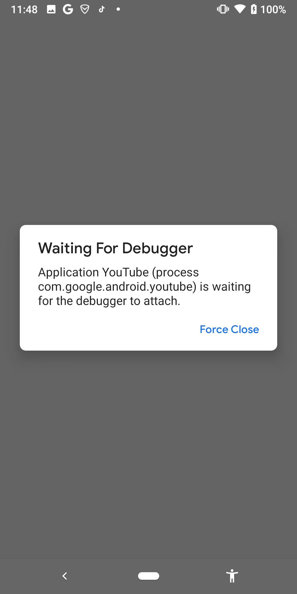

调试方式启动app
以调试方式启动app：
- 目的：这样启动的app，才可以被调试，方便被调试
此处以调试方式启动YouTube的app：
adb shell am start -D -n com.google.android.youtube/com.google.android.apps.youtube.app.application.Shell_HomeActivity
说明：
-D：表示debug模式com.google.android.youtube/com.google.android.apps.youtube.app.application.Shell_HomeActivitycom.google.android.youtube- app包名=package
com.google.android.apps.youtube.app.application.Shell_HomeActivity- app的主页面=MainActivity
以调试模式启动后的效果：

启动后，app没有立刻正常运行，而是显示 Waiting For Debugger
并且：此界面不会消失，直到对应的debugger调试器连接上，开始调试，此界面才消失，才继续开始运行app
说明：
如何获取app的包名
Youtube包名：com.google.android.youtube
- 方式1：
pm
举例：
~ adb shell pm list packages -f | grep youtube
package:/data/app/com.google.android.youtube-9Nw_99XIz2jZh7Lyor2SKQ==/base.apk=com.google.android.youtube
- 方式2：
aapt
aapt dump badging com.google.android.youtube_16.29.36.apk | grep package
package: name='com.google.android.youtube' versionCode='1522263488' versionName='16.29.36' compileSdkVersion='31' compileSdkVersionCodename='12'
如何获取app的MainActivity
app的首页的activity，一般被叫做MainActivity
一般情况是：apktool逆向导出的xml格式的AndroidManifest.xml中，找到android.intent.action.MAIN所属于的activity，就是MainActivity
-》此处YouTube的情况稍微特殊点：
AndroidManifest.xml
<activity android:exported="true" android:name="com.google.android.apps.youtube.app.application.Shell_HomeActivity" android:theme="@style/Theme.YouTube.Launcher"/>
<activity-alias android:exported="true" android:name="com.google.android.youtube.HomeActivity" android:targetActivity="com.google.android.apps.youtube.app.application.Shell_HomeActivity"/>
<activity-alias android:exported="true" android:name="com.google.android.youtube.app.application.Shell$HomeActivity" android:targetActivity="com.google.android.apps.youtube.app.application.Shell_HomeActivity"/>
<activity-alias android:exported="true" android:name="com.google.android.youtube.app.honeycomb.Shell$HomeActivity" android:targetActivity="com.google.android.apps.youtube.app.application.Shell_HomeActivity">
<intent-filter>
<action android:name="android.intent.action.MAIN"/>
<category android:name="android.intent.category.DEFAULT"/>
<category android:name="android.intent.category.LAUNCHER"/>
</intent-filter>
找到：
android.intent.action.MAIN
所属的activity是：
com.google.android.youtube.app.honeycomb.Shell$HomeActivity
其是个别名alias，对应着真正的activity=MainActivity是：
com.google.android.apps.youtube.app.application.Shell_HomeActivity
TODO：
- 【已解决】获取安卓apk应用的app的主界面activity即MainActivity